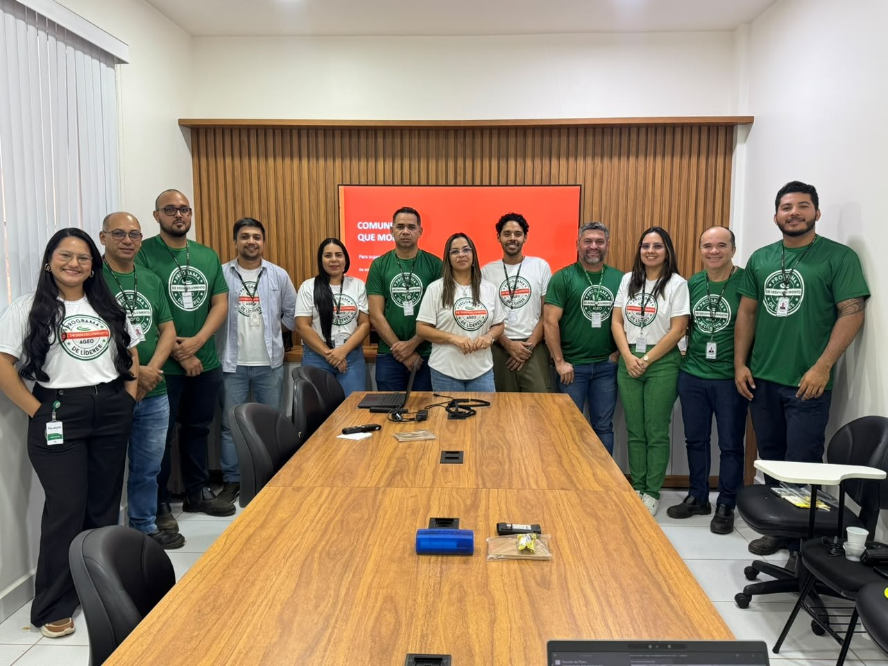

Relatório consolidado dos encontros de setembro e outubro — leitura dos indicadores de clareza, aplicação prática e evolução da liderança.
2 encontros avaliadosSetembro e outubro
Setembro · Avaliação
A avaliação permaneceu entre 9 e 10
“De 1 a 10, o quanto o conteúdo apresentado atendeu às suas expectativas e foi relevante para o seu trabalho?” — 100% das avaliações ficaram na faixa de 9 a 10.
Entre os conceitos trabalhados, dois foram apontados como os mais valiosos para o dia a dia:
“Feedback assertivo.”
“Comunicação, o quanto ela é importante para o nosso trabalho e dia a dia. A importância de uma comunicação clara e precisa.”
2 / 7
Outubro · Quantitativo
A avaliação seguiu no mesmo patamar
“De 1 a 10, o quanto o conteúdo apresentado atendeu às suas expectativas e foi relevante para o seu trabalho?”
9,4/10
Nota média
nenhuma avaliação abaixo de 8
Nota 1067%
Nota 911%
Nota 822%
78% das avaliações ficaram entre 9 e 10.
3 / 7
Outubro · Qualitativo
O que os líderes mais valorizaram
“Qual conceito ou técnica transmitido neste treinamento você considera mais valioso?” — as respostas se organizam em quatro frentes:
Processo e decisão
O processo de tomada de decisão e a importância de saber cada passo
Entender o processo e enxergar as possibilidades de melhoria
Liderança que desenvolve
O conceito de líder que ensina o próximo
Melhores práticas da liderança
Alinhamento com a equipe
Alinhamento de expectativas com a equipe
A importância das pessoas e do planejamento
Clareza na condução
A clareza do conteúdo
Conteúdo aplicado com grande conhecimento e maestria
4 / 7
Outubro · Aplicação
A maioria aplica sem impedimentos
“Qual o principal fator que pode dificultar a aplicação do aprendizado no seu trabalho?”
88%
conseguem aplicar o aprendizado sem impedimentos
1
Tempo para executar
Rotina corrida, sem espaço na agenda para tocar o que foi combinado.
2
Recursos e ferramentas
Falta do que é preciso ter em mãos para colocar o aprendizado em prática.
São os dois fatores que apareceram nas respostas dos dois encontros. Nenhum outro impedimento foi apontado.
5 / 7
Continuidade
O que sustenta o avanço a longo prazo
Tempo e recursos, os dois pontos que apareceram nas respostas, formam uma agenda de desenvolvimento para os próximos meses. O encontro seguinte fecha o ciclo com a Sinapsy, e a partir dali a continuidade acontece dentro da AGEO.
Como a AGEO pode apoiar esses líderes
Um líder de referência à frente do grupo, para que o ritmo não dependa do programa para continuar
Espaço protegido na agenda, para que o plano de cada líder caiba na rotina
Acesso aos recursos e ferramentas que forem pedidos, com responsável e prazo
Uma conversa periódica sobre o que avançou e onde cada um precisa de apoio
O que vamos aprender no próximo encontro
Saúde mentalPrevenção e cuidados
Último encontro do ciclo
6 / 7

Obrigada!
A vida não é força, é fluxo! E liderar é facilitar o fluxo.